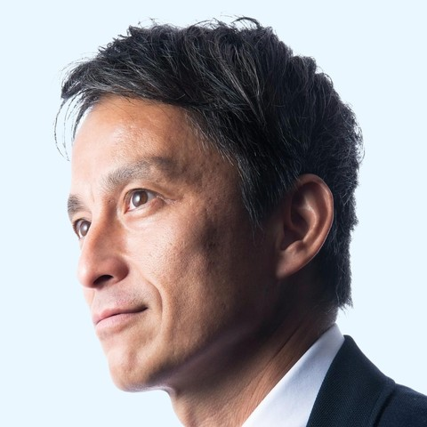

01
小金井市と中野区で連携し地方自治を進めて行きましょう！
国政と市政は全く異なります。住民に最も身近な地方政府として、JR中央線の自治体同士、小金井市と中野区で連携し地方自治を進めて行きましょう！白井市長、頑張って！
検討用サンプル(草案) 白井とおる公式サイトに「首長コメント」欄を加える場合のデザイン案です。写真は仮置きです(中野区長・立川市長は提供写真、ほかは各自治体の公式ページから)。公開前に、各首長の了承と写真の使用許諾、選挙管理委員会への確認が必要です。
小金井市と中野区で連携し地方自治を進めて行きましょう！
国政と市政は全く異なります。住民に最も身近な地方政府として、JR中央線の自治体同士、小金井市と中野区で連携し地方自治を進めて行きましょう！白井市長、頑張って！

いつもまっすぐで真摯に取り組む白井さんの姿勢
白井さんとは議員時代からご縁があり、同じタイミングで首長に。バランス感覚があり、市長として市民と市政を近づけるべく、小金井市政にいつもまっすぐで真摯に取り組む白井さんの姿勢には刺激を受けています。ともにがんばりましょう！

小金井市の更なる発展を心から願います。
市長は、市民代表として特定の政党のためでなく、市民に公正公平であるべきです。私はこの9月に再選しましたが、青年市長会の仲間であり、また、同じく完全無所属の市長の仲間として、白井市長の再選と私が２０歳代に過ごした小金井市の更なる発展を心から願います。

ご自身の子育て経験を市政に生かして頑張る白井さん
隣市として、また昭和病院企業団や湖南衛生組合で共に歩む仲間です。弁当や朝食を担当しながらご自身の子育て経験を市政に生かして頑張る白井さんを心から応援しています。

"ハブ"のような包摂力の持ち主。
白井市長は、子どもから高齢者まで多様な声を束ね前進させる"ハブ"のような包摂力の持ち主。インクルーシブな小金井市の実現を確信し、同世代の市長として応援します。

白井とおる酒井 直人JR中央線の自治体同士森澤 恭子議員時代からご縁山本 けい青年市長会の仲間小林 洋子隣市として酒井 大史同世代の市長